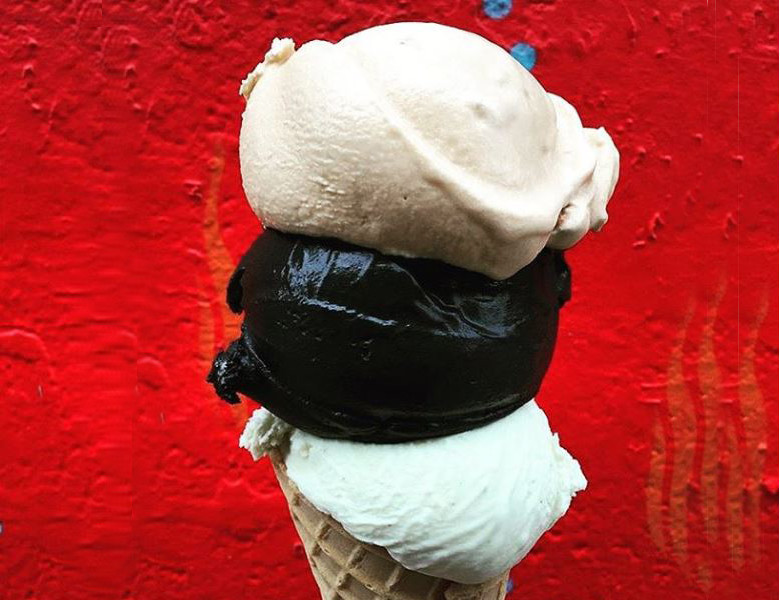

Neobičan sladoled - hit u Njujorku

Sa porastom temperature, u Njujork je stigao i mat crni sladoled.
Na tržište, kojim dominiraju šareni slatkiši jarkih boja, stiže ‘zift crni’ sladoled.
Proizvodi ga poslastičarnica Morgenstern’s Finest Ice Cream, a suprotno mišljenju ljudi koji ga još nisu probali – nema ukus uglja, na koji neodoljivo podseća.
“Već duže vreme se poigravam kokosovim pepelom, a onda sam probao fensi čokoladicu koja sadrži upravo kokosov pepeo. Znao sam da negde moram da ga upotrebim. Želeli smo da uključimo sladoled sa ukusom kokosa u ponudu, i sve kockice su se sklopile”, rekao je Morgenstern za Mic.
Osim kokosovog pepela, sladoled se sastoji od kokosovog mleka, kokosovog krema i kokosovog brašna, piše Lonely Planet.